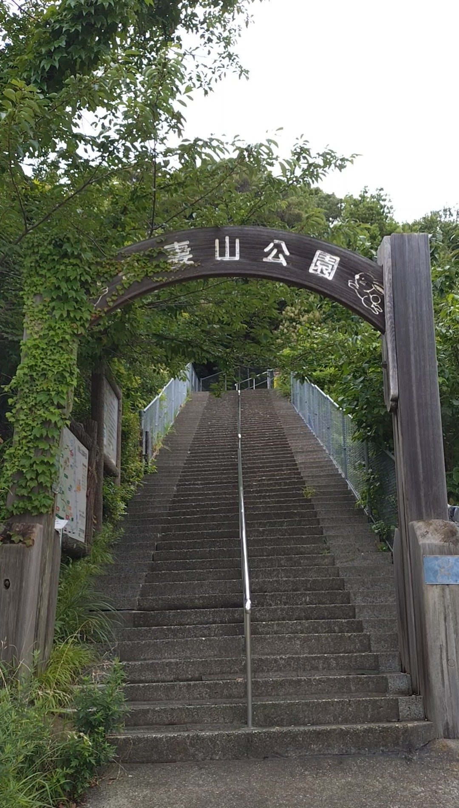
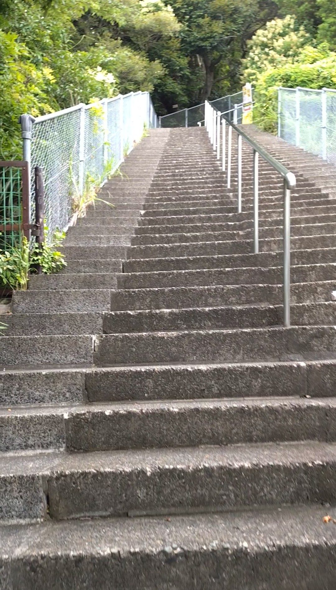
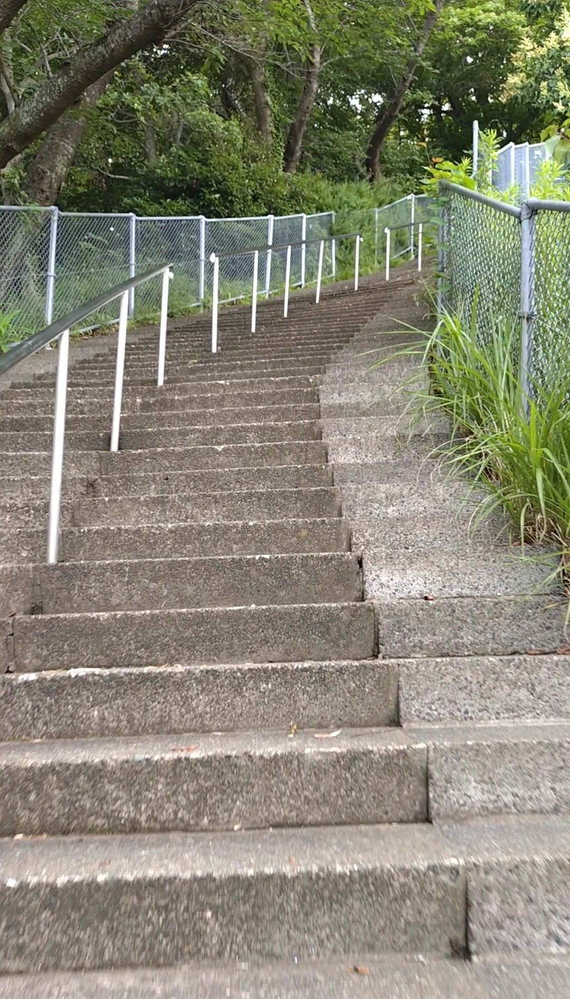
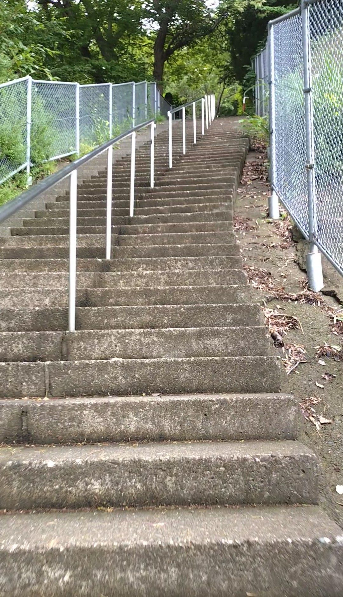
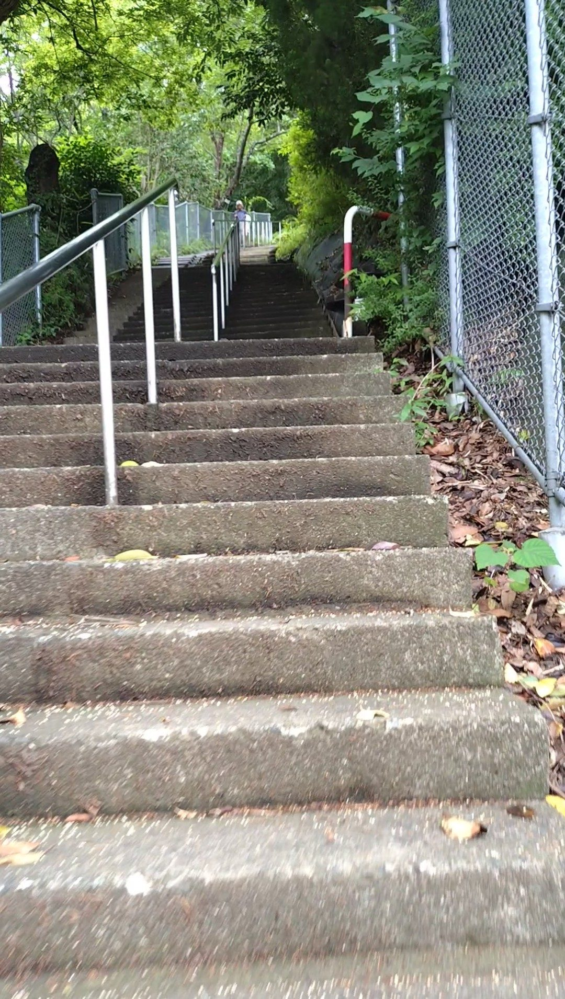
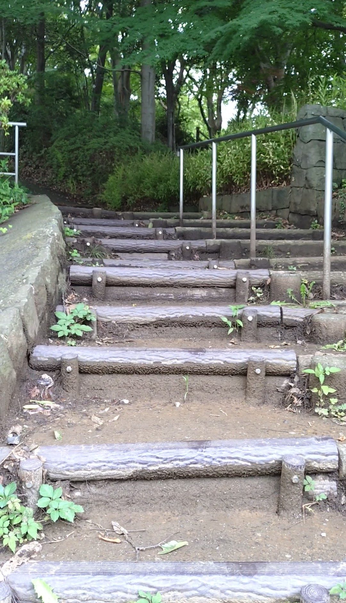
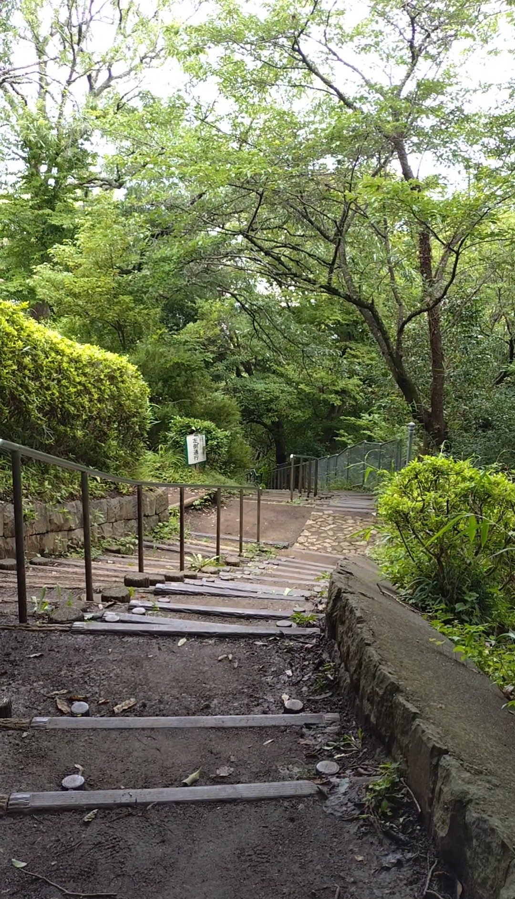

神奈川県中郡二宮町にある吾妻山公園（役場口）は、JR東海道本線の二宮駅から徒歩わずか5分という好立地にある311段の石段です。段差が低くて登りやすく、途中で大きく右にカーブするという個性的な形状が特徴です。登り始めは電車の音が聞こえているのに、公園の中に入るにつれて小鳥のさえずりに変わっていく——その変化もこの石段の魅力のひとつでした。
JR東海道本線「二宮駅」下車、徒歩約5分。駅から坂を登ると役場口の入口が見えてきます。案内看板が出ているので迷いにくいです。
段差は低めで登りやすく、手すりも整備されているため、幅広い方に楽しんでいただける石段です。歩きやすい靴で訪れてください。雨上がりは石段が滑りやすくなるのでご注意ください。
二宮駅から坂を少し登ると、役場口の入口に到着します。入口には「吾妻山公園」と書かれた看板とともに、ウサギのかわいらしいイラストが添えられています。公園のキャラクターでしょうか。出迎えてくれるこの看板が、登り始める前から気分を和らげてくれます。

登り始めると、一段一段の高さが低くて非常に歩きやすいことに気づきます。手すりもしっかり設置されていて、体への負担が少なく、リズムよく登れます。序盤はまだ電車の音が耳に届いていて、駅のそばにいることを実感します。

途中まで登ると、石段が大きく右へカーブし始めます。踏む石段自体は真っすぐですが、1段ずつ右横に水平にずれていくような形で、石段全体が丘の輪郭に沿って曲がっていきます。手すりもカーブに合わせてしなやかに曲がっていて、この造形がなんとも面白い。思わず足が進みます。

カーブを過ぎるあたりから、公園の緑の中に入ってきた感じが増してきます。気がつけば電車の音がほとんど聞こえなくなっていて、代わりに小鳥のさえずりがよく聞こえるようになっています。駅から5分の場所とは思えない静けさです。

右カーブが終わると、石段は真っすぐになり、緩やかな上りが続きます。カーブの間は視界が変わり続けていましたが、ここからは前方が開けてきて、ゴールに向けてリズムよく進める感じです。

終点に近づくと、素材が変わって木でつくられた階段になります。石段から木製の段へという切り替わりが、コースのアクセントになっています。こういった変化があると、登っていて飽きがきません。

311段を登り切って振り返ると、低い段差の石段がずっと下まで続いていたことがよくわかります。急勾配ではなく、丘の形に寄り添うように作られた石段だったのだなということが、上から見ると一目瞭然です。駅近・低段差・右カーブ・木製の終盤と、変化に富んだ楽しい石段でした。
